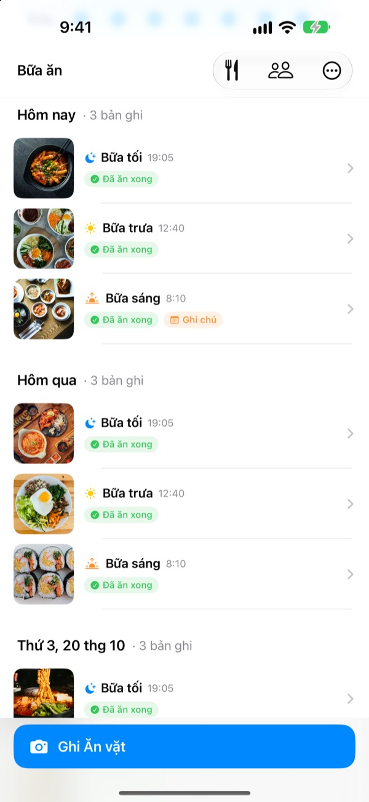
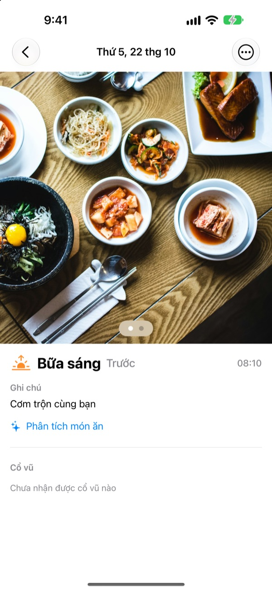
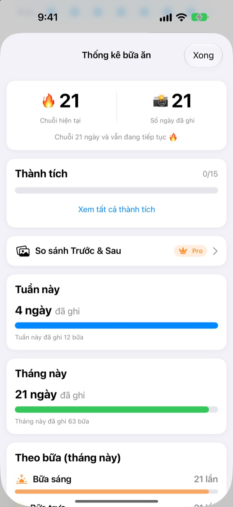
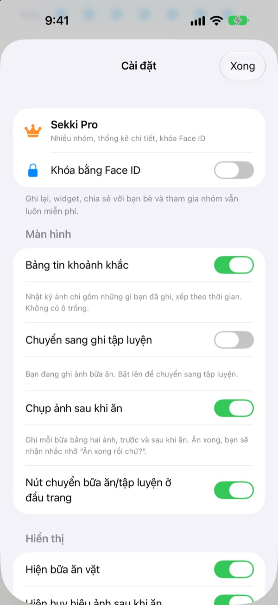

Chụp một tấm trước khi ăn.
Vậy là ghi xong.
Sekki xem giờ chụp rồi tự xếp vào bữa sáng, bữa trưa, bữa tối hoặc ăn vặt. Mỗi ngày chỉ cần ghi một bữa, chuỗi vẫn không đứt.
Ghi chép, thống kê, tiện ích và chia sẻ với bạn bè đều miễn phí.

Thử chụp xem
Chọn giờ chụp rồi nhấn nút ghi. Giống trong ứng dụng, nút đã ghi sẵn bữa của giờ đó.
Bạn từng bỏ nhật ký ăn uống sau ba ngày?
Bỏ một bữa sáng, quên một bữa tối, những ô trống bắt đầu gây khó chịu cho tới khi bạn xóa ứng dụng. Sekki không có ô trống. Chỉ những bữa bạn ghi được xếp theo thời gian, và chụp một bữa là ngày đó đã được tính.
Chụp xong, bữa ăn tự vào chỗ
Dựa vào giờ chụp, Sekki xếp ảnh vào bữa sáng, bữa trưa, bữa tối hoặc ăn vặt. Thêm ảnh trước và sau khi ăn, ghi không cần ảnh hoặc viết ghi chú.
Món ăn được nhận diện ngay trên máy, miễn phí, và ảnh không bao giờ rời khỏi điện thoại.

Ghi chép không bao giờ giảm
Mỗi ngày một bữa là giữ chuỗi, và tổng số ngày đã ghi không bao giờ giảm. Thống kê tuần và tháng cho thấy bạn đã ghi bao nhiêu ngày, bao nhiêu bữa thay vì tỉ lệ hoàn thành.
Dọc đường bạn còn gom được thành tích như Chuỗi 7 ngày hay Người dậy sớm.

Chỉ những bữa bạn chọn, không cần mở ứng dụng
Chọn bữa muốn được nhắc và chỉnh giờ ăn theo nếp sống của bạn. Chụp ảnh trước khi ăn xong, bạn đánh dấu Đã ăn xong ngay từ thông báo.
Ghi bằng nút Tác vụ, Siri, Phím tắt hoặc tiện ích, và thêm bạn bằng mã để cổ vũ nhau bằng emoji và bình luận.

Bắt đầu trong ba bước
- 1
Chọn bữa cần theo dõi
Lần đầu mở, Sekki hỏi bạn muốn nhắc bữa nào. Có thể đổi sau trong Cài đặt.
- 2
Chụp một tấm trước khi ăn
Nút ghi đã hiện sẵn bữa của giờ hiện tại. Nhấn, chụp, xong.
- 3
Ăn xong thì chạm
Chạm Đã ăn xong trong thông báo hoặc tiện ích, hoặc thêm ảnh sau khi ăn.
Ghi mà không cần mở ứng dụng
- Thông báo
- Sau ảnh trước khi ăn, đánh dấu Đã ăn xong ngay từ thông báo
- Tiện ích Màn hình chính
- Xem số bữa hôm nay và bữa đang ăn, rồi chạm nút Đã ăn xong
- Tiện ích Màn hình khóa
- Chữ nhật, tròn và một dòng
- Nút Tác vụ · Siri · Phím tắt
- Ghi Đã ăn xong bằng một nút hoặc một câu
- Lưu vào Ảnh
- Bật trong Cài đặt để có album Sekki riêng cho bữa ăn và tập luyện
- Chế độ tập luyện
- Tập luyện được lưu riêng với bữa ăn, số buổi trong tháng hiện ngay
Nút Đã ăn xong trên tiện ích cần iOS 17 trở lên.
Ghi chép miễn phí. Sekki Pro cho bạn xem sâu hơn.
Miễn phí
- Ghi bằng ảnh và tự xếp bữa, ảnh trước và sau, ghi chú
- Chuỗi, tổng số ngày, thống kê tuần và tháng, thành tích
- Nhắc các bữa bạn chọn, Đã ăn xong không cần mở ứng dụng
- Tiện ích, nút Tác vụ, Siri và Phím tắt
- Chia sẻ bữa ăn và tập luyện với bạn bè, cổ vũ bằng emoji và bình luận
- Tạo một nhóm, tham gia bao nhiêu nhóm khác cũng được
- Nhận diện món ăn ngay trên máy
Sekki Pro
- Nhiều nhóm cho gia đình, công ty, hội tập luyện
- So sánh song song bữa ăn vài tuần trước và bây giờ
- Xem những món bạn ăn nhiều nhất
- Khóa ứng dụng bằng Face ID hoặc Touch ID
Gói đăng ký theo năm hoặc tháng, hoặc mua một lần dùng trọn đời
Gói đăng ký tự động gia hạn trừ khi bạn hủy ít nhất 24 giờ trước khi hết kỳ. Hủy bất cứ lúc nào trong Cài đặt > Tài khoản Apple > Đăng ký. Điều khoản dịch vụ: m1zz.github.io/RoutineCamera/vi/terms.html
Câu hỏi thường gặp
Ảnh được lưu ở đâu?
Trên thiết bị của bạn. Nếu bật Tự động lưu vào Ảnh trong Cài đặt, ảnh cũng vào album Sekki trong ứng dụng Ảnh. Khi Chia sẻ bữa ăn của tôi đang bật (mặc định là bật), ảnh được tải lên iCloud để bạn bè đã thêm xem được. Tắt trong Cài đặt > Tài khoản & chia sẻ.
Thêm bạn bè thế nào?
Trong màn hình Bạn bè, chia sẻ mã 6 ký tự của bạn và nhập mã của bạn kia. Có thể dán nhiều mã cùng lúc, ngăn cách bằng dấu phẩy.
Cổ vũ bạn bè thế nào?
Mở bữa ăn của bạn ấy và để lại emoji hoặc một bình luận ngắn. Nếu bạn ấy chưa ghi bữa nào, chạm vào ô trống để nhắc khẽ.
Bỏ một bữa có làm đứt chuỗi không?
Không. Hôm đó chỉ cần ghi một bữa bất kỳ, kể cả ăn vặt, chuỗi vẫn tiếp tục. Kể cả bỏ cả ngày, tổng số ngày đã ghi cũng không giảm.
Tôi không nhận được thông báo.
Kiểm tra trong Cài đặt iOS > Thông báo xem Sekki đã được cho phép chưa, và thiết bị đã đăng nhập iCloud chưa. Giờ nhắc bữa ăn đổi được trong cài đặt của ứng dụng.
Nhận diện món ăn có gửi ảnh lên máy chủ không?
Không. Việc nhận diện diễn ra trên máy, nên ảnh không rời khỏi điện thoại. Miễn phí và không giới hạn.
Tôi muốn xóa tài khoản và dữ liệu.
Vào Bạn bè > Tài khoản > Xóa tài khoản. Tài khoản và dữ liệu bữa ăn trên máy chủ sẽ bị xóa và không thể khôi phục. Nếu có vấn đề, hãy gửi email cho chúng tôi.
Hủy gói đăng ký thế nào?
Trong Cài đặt > Tài khoản Apple > Đăng ký. Gói tự động gia hạn trừ khi bạn hủy ít nhất 24 giờ trước khi hết kỳ. Gói trọn đời chỉ trả một lần.
Báo lỗi, góp ý tính năng hay hỏi về tài khoản, hãy gửi email tới leeo@kakao.com hoặc nhắn tin Instagram @lee25_ios. Chúng tôi thường trả lời trong một hai ngày.